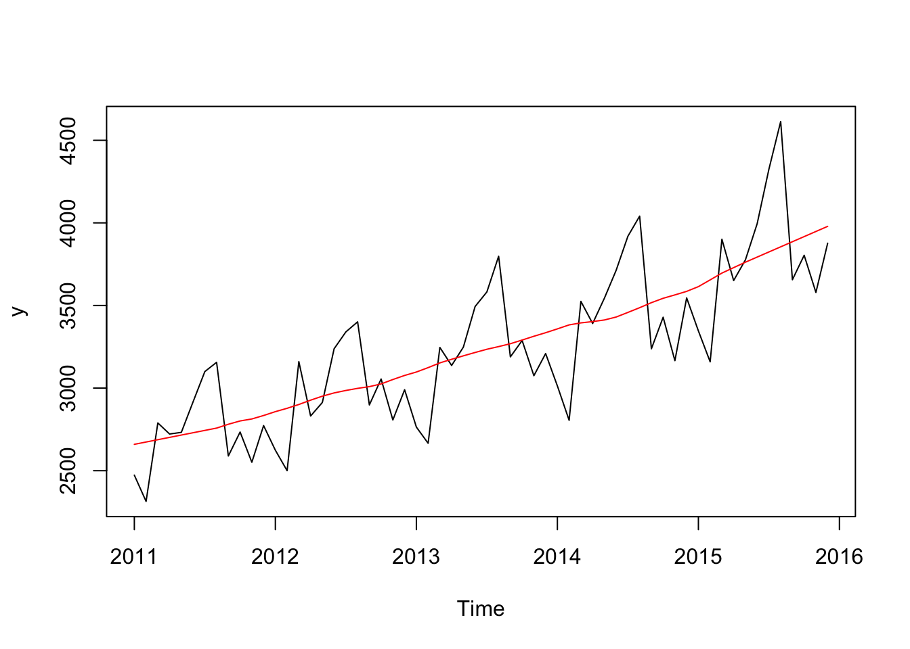
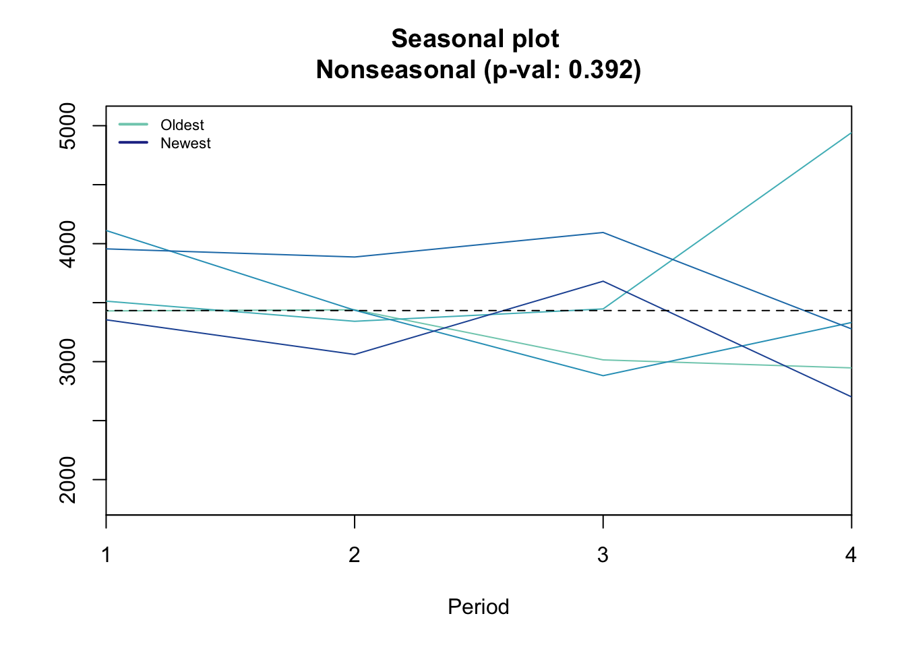
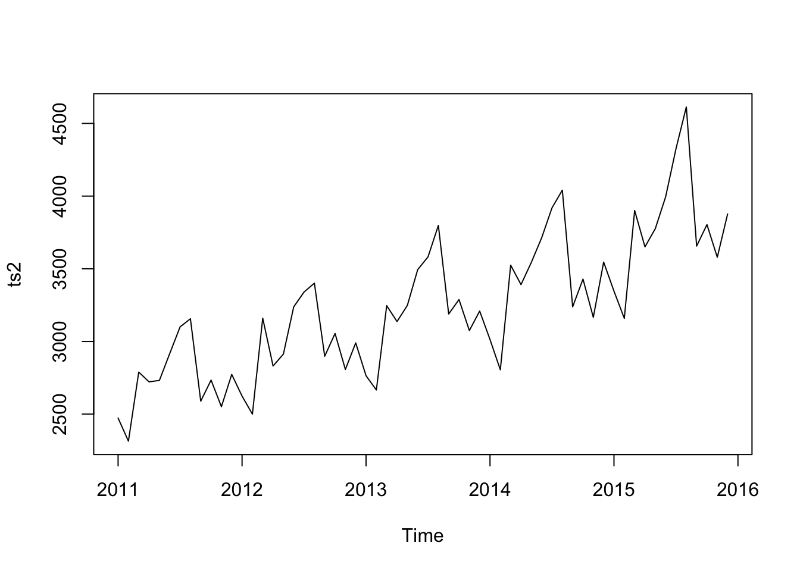
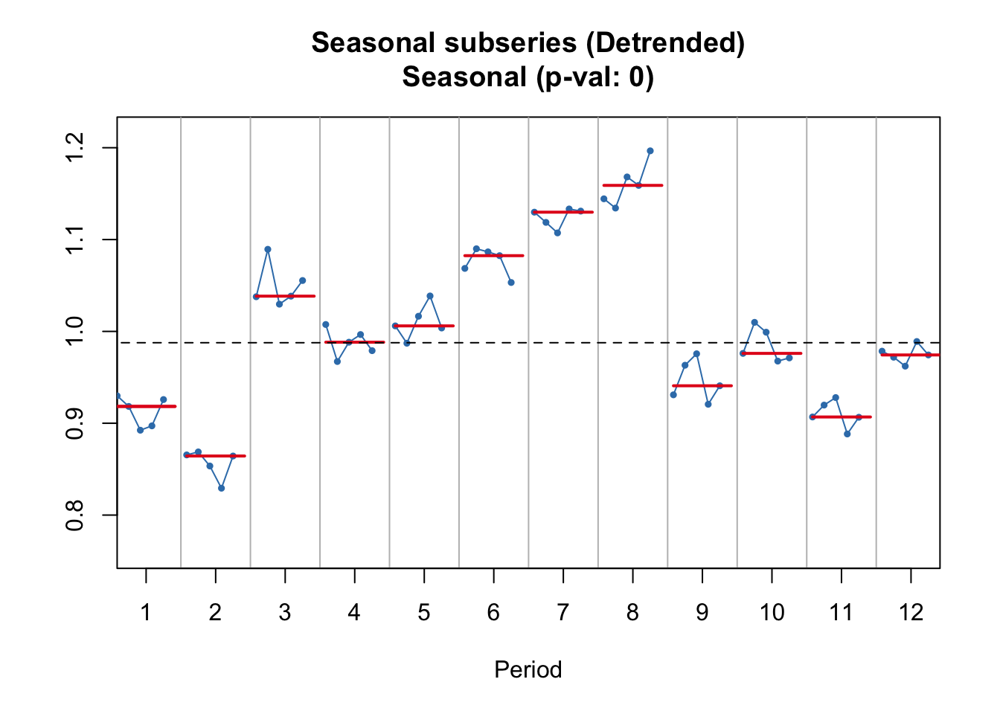
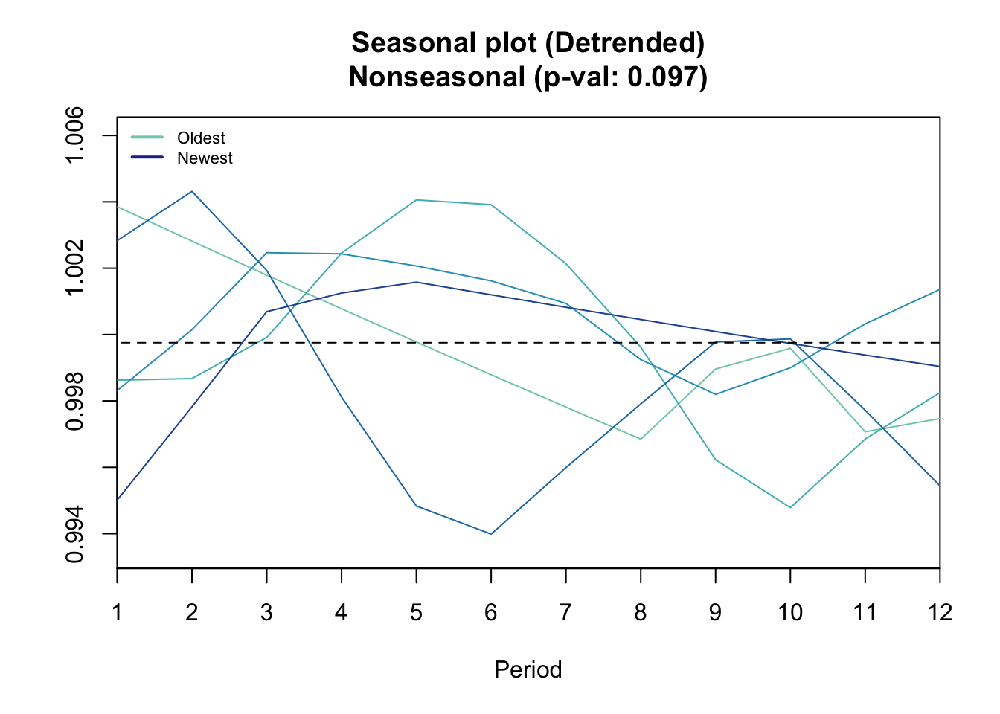
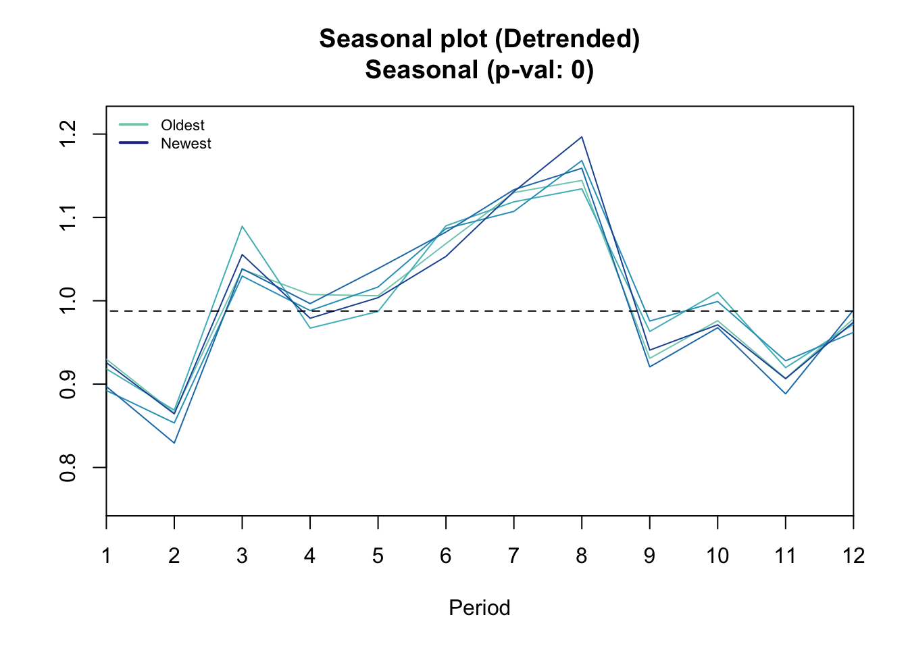
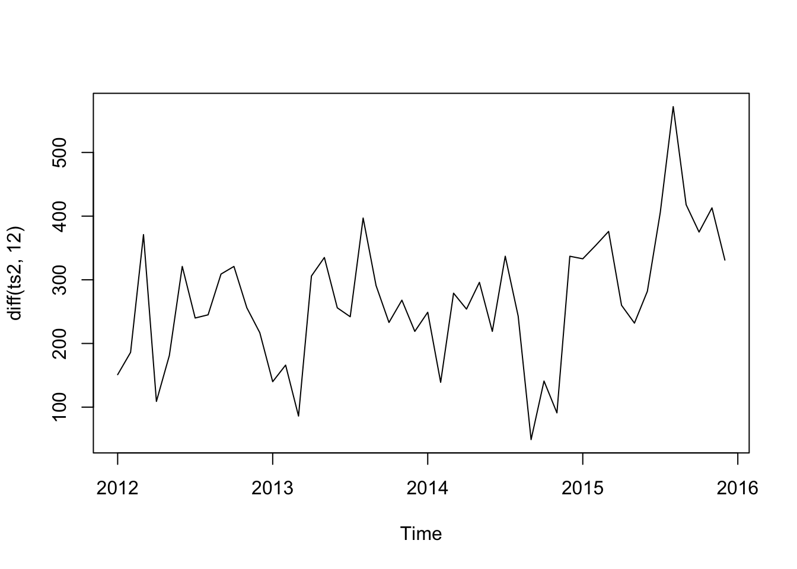
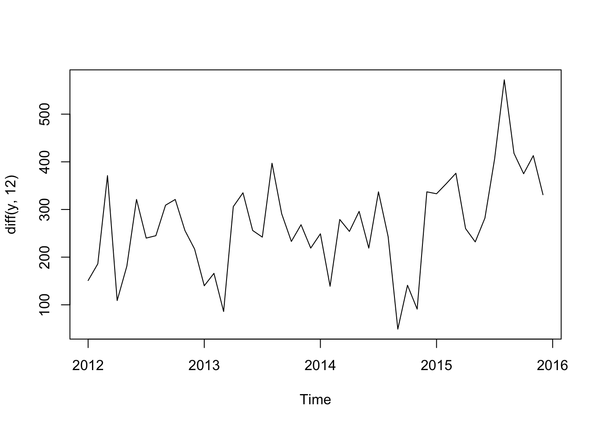
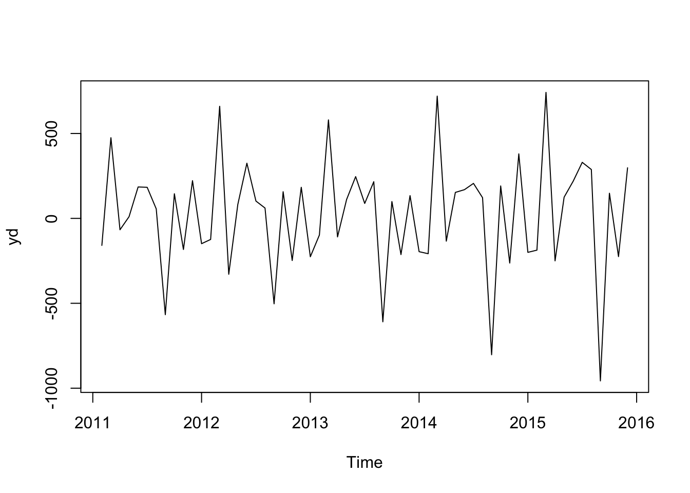
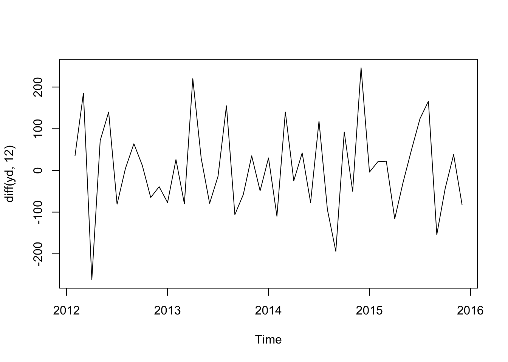

Just some notes, findings and tips from my workshop.
Never knew what %% does. It gives the mode…
7 %% 2## [1] 1Exponetial smoothing
Straight line through the data….
forcast packge defaults to Akaike’s Information Criterion (AIC) for it’s selection…
Some tools that my tutors made:
setwd("/Users/rosseji/Dropbox/TrendLock/ISF/forecasting with R/")
# Load the three time series, as before
ts1 <- ts(scan("ts1.txt"), start=c(2011,1), frequency=4)
ts2 <- ts(scan("ts2.txt"), start=c(2011,1), frequency=12)
ts3 <- ts(scan("ts3.txt"), start=c(2011,1), frequency=12)
# Let us store the time series to be explored in variable `y' so that we can
# repeat the analysis easily with new data if needed.
y <- ts2
# First we plot the series to get a general impression
plot(y)
# ----- Trend -----
# Let us look for trend in the data, by calculating the Centred Moving
# Average
cma <- cmav(y, outplot=1)## Model is being refit with current smoothing parameters but initial states are being re-estimated.
## Set 'use.initial.values=TRUE' if you want to re-use existing initial values.print(cma)## Jan Feb Mar Apr May Jun Jul
## 2011 2659.533 2673.576 2687.619 2701.662 2715.705 2729.748 2743.792
## 2012 2857.417 2877.625 2900.708 2926.958 2951.000 2970.708 2985.583
## 2013 3097.250 3123.875 3152.542 3174.375 3195.250 3215.542 3235.042
## 2014 3358.375 3382.542 3394.708 3402.625 3412.292 3430.125 3458.042
## 2015 3614.167 3654.917 3696.167 3729.208 3762.042 3793.042 3824.042
## Aug Sep Oct Nov Dec
## 2011 2757.833 2781.042 2801.042 2813.125 2834.042
## 2012 2998.333 3008.833 3025.167 3051.875 3076.500
## 2013 3251.208 3268.625 3290.833 3313.750 3335.208
## 2014 3486.667 3517.083 3543.583 3564.083 3585.500
## 2015 3855.042 3886.042 3917.042 3948.043 3979.043cmav(y, outplot=1, fill=T)## Model is being refit with current smoothing parameters but initial states are being re-estimated.
## Set 'use.initial.values=TRUE' if you want to re-use existing initial values.
## Jan Feb Mar Apr May Jun Jul
## 2011 2659.533 2673.576 2687.619 2701.662 2715.705 2729.748 2743.792
## 2012 2857.417 2877.625 2900.708 2926.958 2951.000 2970.708 2985.583
## 2013 3097.250 3123.875 3152.542 3174.375 3195.250 3215.542 3235.042
## 2014 3358.375 3382.542 3394.708 3402.625 3412.292 3430.125 3458.042
## 2015 3614.167 3654.917 3696.167 3729.208 3762.042 3793.042 3824.042
## Aug Sep Oct Nov Dec
## 2011 2757.833 2781.042 2801.042 2813.125 2834.042
## 2012 2998.333 3008.833 3025.167 3051.875 3076.500
## 2013 3251.208 3268.625 3290.833 3313.750 3335.208
## 2014 3486.667 3517.083 3543.583 3564.083 3585.500
## 2015 3855.042 3886.042 3917.042 3948.043 3979.043#Seasonality
seasplot(ts2)## Model is being refit with current smoothing parameters but initial states are being re-estimated.
## Set 'use.initial.values=TRUE' if you want to re-use existing initial values.
## Results of statistical testing
## Evidence of trend: TRUE (pval: 0)
## Evidence of seasonality: TRUE (pval: 0)seasplot(ts1)## Model is being refit with current smoothing parameters but initial states are being re-estimated.
## Set 'use.initial.values=TRUE' if you want to re-use existing initial values.
## Results of statistical testing
## Evidence of trend: FALSE (pval: 0.623)
## Evidence of seasonality: FALSE (pval: 0.392)Addative vs Multiplicative
An argument in decompse. In the ts below we can that the seasonality grows as time goes on (ie the y components widens)
plot(ts2)
Seeing internal trends… (like two peaks)
seasplot(y,outplot=3)## Model is being refit with current smoothing parameters but initial states are being re-estimated.
## Set 'use.initial.values=TRUE' if you want to re-use existing initial values.
## Results of statistical testing
## Evidence of trend: TRUE (pval: 0)
## Evidence of seasonality: TRUE (pval: 0)Test in a moving average
Non-paramatric test don’t assume norm dist and hence are closer to realistic data…
coxstuart(cma)## $H
## [1] 1
##
## $p.value
## [1] 9.313226e-10
##
## $Htxt
## [1] "H1: There is trend (upwards or downwards)"Test seasonality
seasplot(cma)## Model is being refit with current smoothing parameters but initial states are being re-estimated.
## Set 'use.initial.values=TRUE' if you want to re-use existing initial values.
## Results of statistical testing
## Evidence of trend: TRUE (pval: 0)
## Evidence of seasonality: FALSE (pval: 0.097)seasplot(ts2)## Model is being refit with current smoothing parameters but initial states are being re-estimated.
## Set 'use.initial.values=TRUE' if you want to re-use existing initial values.
## Results of statistical testing
## Evidence of trend: TRUE (pval: 0)
## Evidence of seasonality: TRUE (pval: 0)Instead of acf pacf tests?
plot(diff(ts2, 12))
plot(diff(y, 12))
yd <- diff(y, 1)
plot(yd)
ydd <- plot(diff(yd, 12))
ydd## NULL